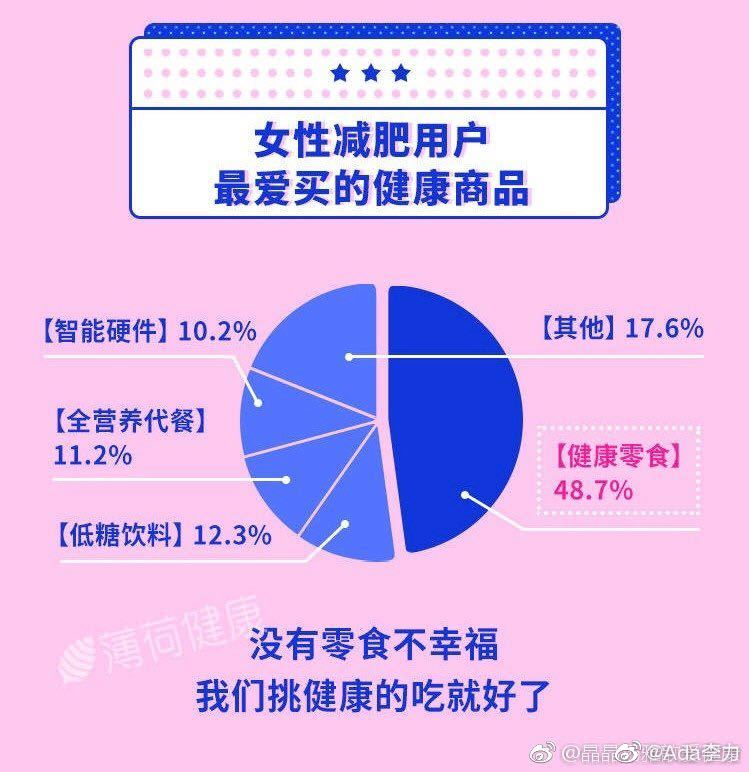

#创业#
几乎所有的减肥建议里面都有戒掉零食，因为零食通常是高糖，高油，高盐，高热量，不这样的话，零食肯定跟美味无关。但这几高不但是减肥大忌，对健康也有害。
但附图这个调查真是让我笑死了，中国女性减肥用户最爱买的健康食品，排第1位的是健康零食。
所以说呢，做任何创业项目，都不要跟用户的习惯去做对，跟人性去做对。顺着人性去做事会顺利得多。
几乎所有的减肥建议里面都有戒掉零食，因为零食通常是高糖，高油，高盐，高热量，不这样的话，零食肯定跟美味无关。但这几高不但是减肥大忌，对健康也有害。
但附图这个调查真是让我笑死了，中国女性减肥用户最爱买的健康食品，排第1位的是健康零食。
所以说呢，做任何创业项目，都不要跟用户的习惯去做对，跟人性去做对。顺着人性去做事会顺利得多。
- 